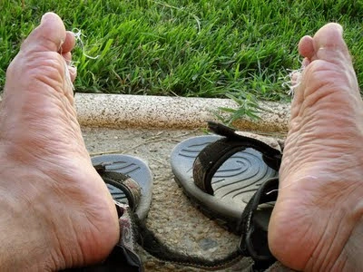
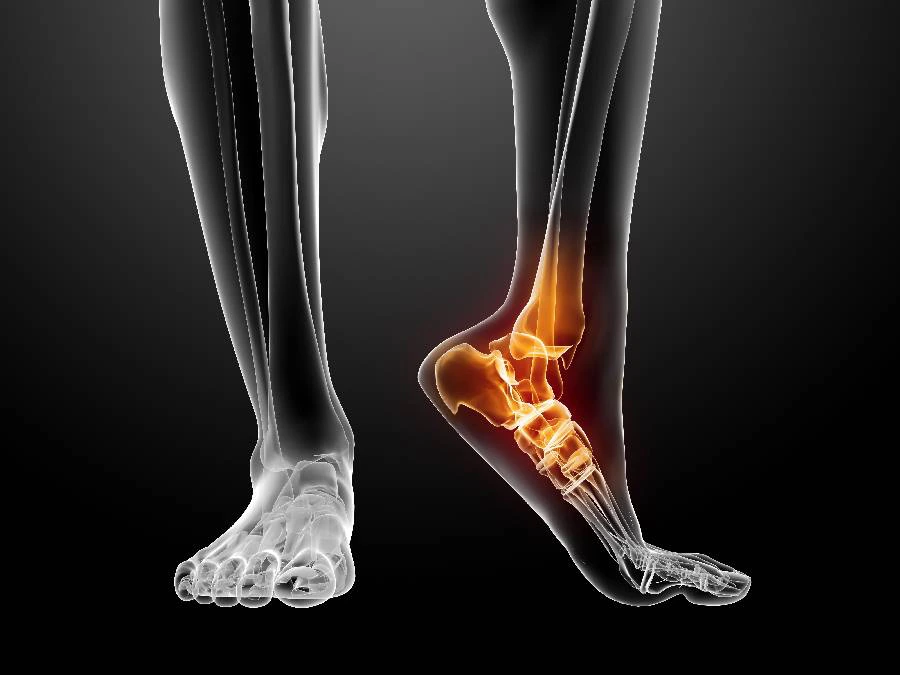

Las deformidades del pie en todas las edades suponen una gran dificultad para el día a día de las personas que las sufren. En Pogología Arlanzón tratamos todo tipo de alteraciones en tus pies para hacer que camines correctamente, sin dolor y feliz.

Tratamientos
- Pie plano: Es un término que se utiliza para describir aquel pie que cuenta con la ausencia total o parcial de la curvatura o arco, creando un área de máximo contacto de la planta del pie con el suelo. Este tipo de pies requieren el uso de plantillas a partir del primer año con un estudio de la marcha previo para poder corregir esta deformidad.
- Hallux valgus: El halux valgus o juanete es una deformidad del dedo gordo que produce una prominencia lateral del hueso
- Espolones: Estas alteraciones consisten en depósitos de calcio que se localizan en los huesos de los pies. En ocasiones pueden ser sumamente dolorosos y molestos. Por su frecuencia destaca el espolón calcáneo.
- Pie cavo: Es aquel pie que presenta un arco más arqueado o exagerado que un pie normal, haciendo que el pie sea relativamente inflexible. Esto aumenta el reparto del peso hacia la zona del antepié, produciendo dolor y a menudo se le asocia una tensión excesiva en el gemelo. Suele ser congénito,es decir, aparece desde el nacimiento y frecuentemente es progresivo,es decir,evoluciona.
- Pie valgo: Es aquel pie que sufre una desviación del talón hacia fuera y un “efecto de caída” de la parte interior que parece tocar el suelo. Provoca cierta inestabilidad o “torpeza” a la hora de caminar o correr.
- Pie varo: Es aquel pie que orienta su planta hacia dentro, apoyando el borde externo y los últimos dedos. Normalmente, va asociado a una lateralización de las piernas y de las rodillas. Han de ser tratados podólogos especializados en ortopedia pediátrica.
- Pie equino: Es aquel pie que está situado en una posición de flexión plantar permanente, es decir, un pie que se estira hacia abajo siguiendo el eje de la pierna. La causa de que el pie adopte esta posición es el acortamiento de partes blandas. Los niños con pies equinos se caracterizan por caminar “de puntillas” (apoyando el antepié).

Estas alteraciones ya no supondrán ningún problema o dolor en tu vida diaria. Consúltanos.